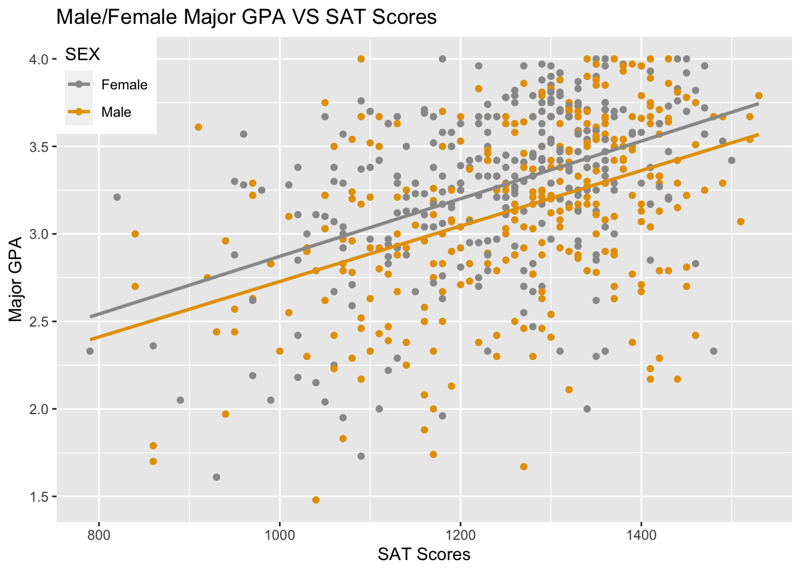
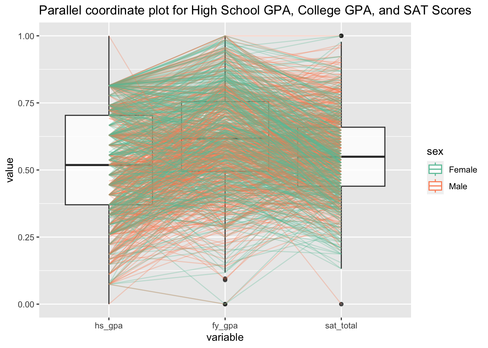
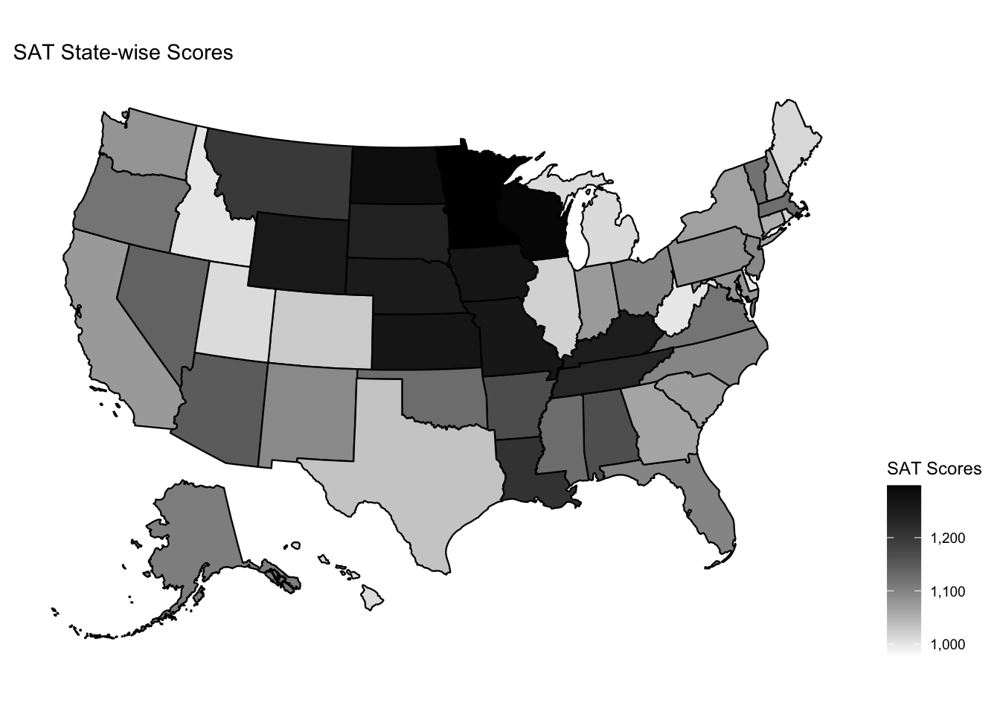
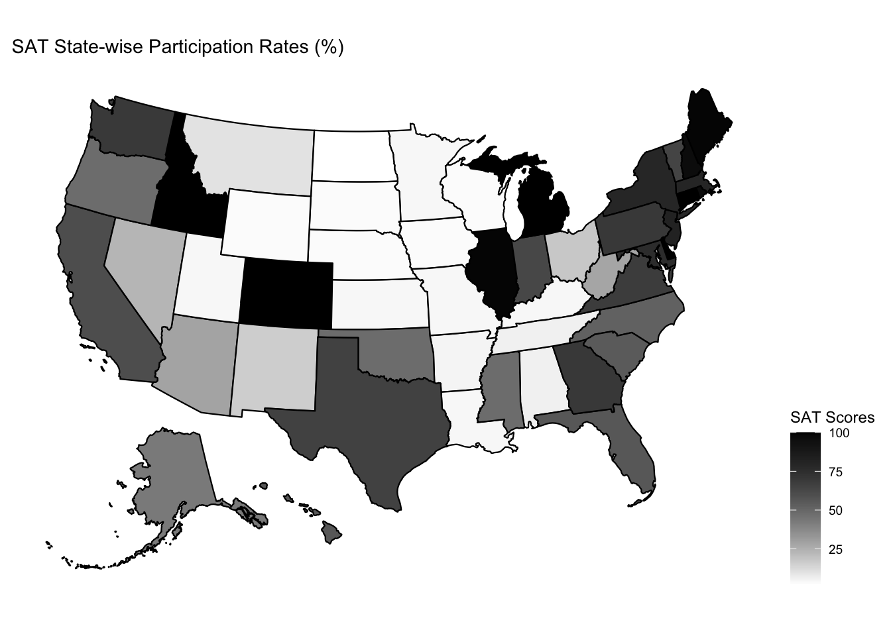
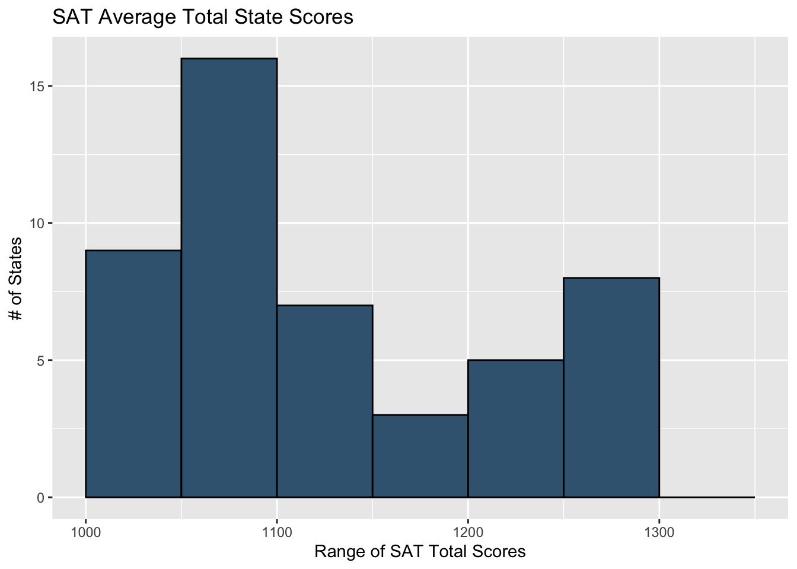
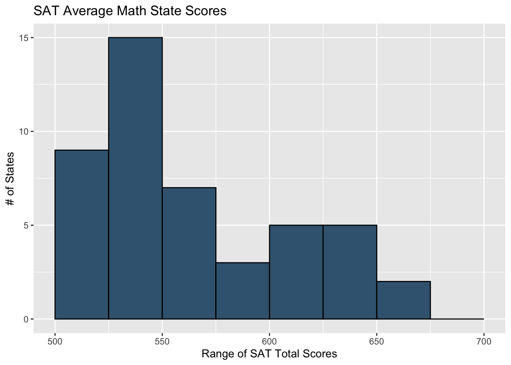
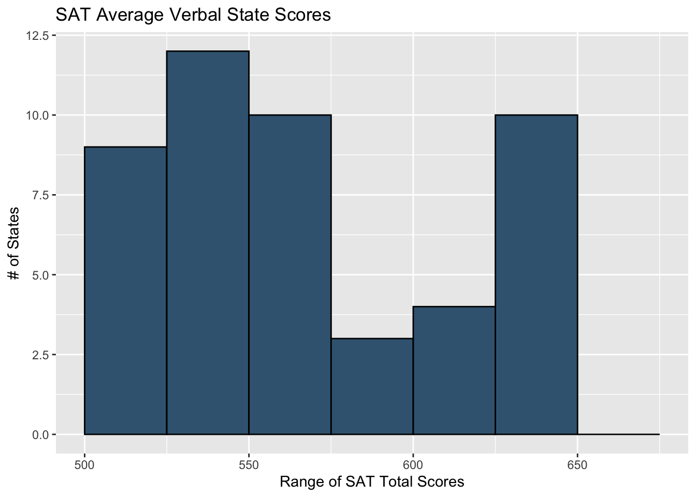
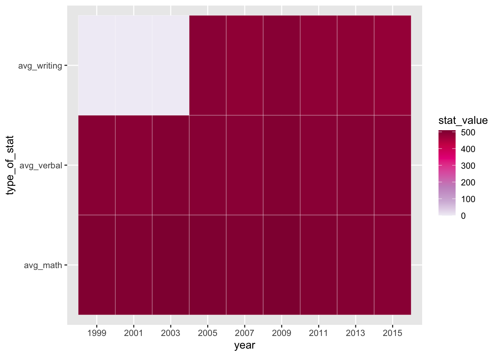
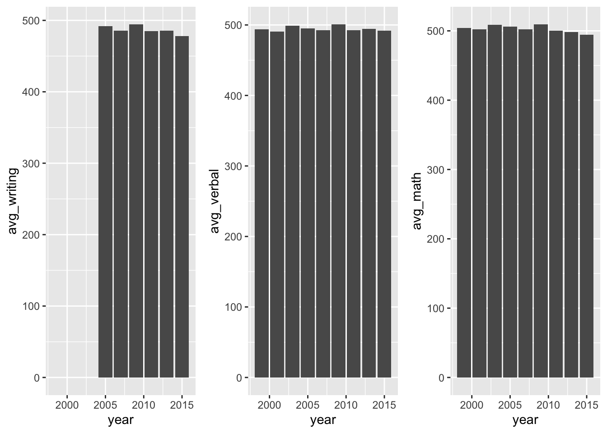
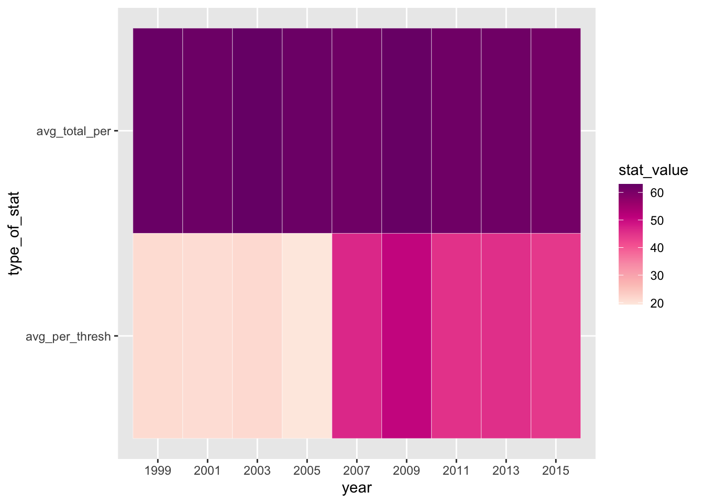

Chapter 4 Results
In this section, we will use exploratory data analysis to show relationships between high school GPA, SAT scores, and college GPA.
4.1 Correlation between SAT Scores and College GPA
We first plot scatter plots to show correlations between SAT scores and college GPA. We can see from the graph that there is a positive correlation between SAT scores and college GPA. This means that, in general, students who score well on the SAT tend to have high GPAs in college. However, it’s important to note that this relationship is not perfect, because the dots are rather scattered. We also introduced students’ gender in the plot, and we can see that female students tend to have slightly higher GPAs than male students despite this difference is small.
## SATV SATM CGPA MGPA Psych1 Psych10 SAT SEX
## 1 601.7049 649.7705 3.38 3.42 3.032998 2.660000 1251.475 Female
## 2 750.0000 780.0000 3.71 3.79 4.000000 4.000000 1530.000 Male
## 3 770.0000 750.0000 3.22 3.67 2.330000 2.660000 1520.000 Male
## 4 730.0000 790.0000 3.16 3.54 3.330000 3.330000 1520.000 Male
## 5 590.0000 920.0000 3.02 3.07 3.000000 3.330000 1510.000 Male
## 6 750.0000 760.0000 3.11 3.07 4.000000 3.330000 1510.000 Male
## 7 760.0000 740.0000 3.22 3.42 3.000000 3.000000 1500.000 Female
## 8 740.0000 750.0000 3.52 3.67 3.660000 3.660000 1490.000 Male
## 9 730.0000 760.0000 3.39 3.53 3.032998 3.330000 1490.000 Female
## 10 710.0000 780.0000 3.32 3.29 3.000000 4.000000 1490.000 Male
## 11 680.0000 800.0000 3.06 3.67 4.000000 3.330000 1480.000 Male
## 12 740.0000 740.0000 2.67 2.33 2.660000 3.330000 1480.000 Female
## 13 750.0000 720.0000 3.74 3.96 4.000000 4.000000 1470.000 Female
## 14 720.0000 750.0000 3.35 3.72 3.660000 3.660000 1470.000 Female
## 15 760.0000 710.0000 3.32 3.57 3.660000 2.660000 1470.000 Male
## 16 780.0000 690.0000 3.59 3.57 3.660000 3.000000 1470.000 Female
## 17 740.0000 730.0000 2.78 3.25 2.000000 3.000000 1470.000 Male
## 18 760.0000 700.0000 3.25 3.82 3.660000 3.660000 1460.000 Female
## 19 690.0000 770.0000 3.64 3.75 3.660000 4.000000 1460.000 Male
## 20 710.0000 750.0000 3.40 3.51 3.032998 3.330000 1460.000 Male
## 21 760.0000 700.0000 2.78 2.83 2.660000 2.660000 1460.000 Female
## 22 710.0000 750.0000 2.53 2.42 2.000000 1.660000 1460.000 Male
## 23 760.0000 690.0000 3.90 4.00 4.000000 3.330000 1450.000 Female
## 24 710.0000 740.0000 3.75 3.92 3.660000 4.000000 1450.000 Female
## 25 700.0000 750.0000 3.60 3.78 4.000000 4.000000 1450.000 Male
## 26 700.0000 750.0000 3.46 3.70 4.000000 3.660000 1450.000 Female
## 27 700.0000 750.0000 3.21 3.22 2.660000 3.330000 1450.000 Male
## 28 710.0000 740.0000 2.45 2.81 3.330000 2.000000 1450.000 Male
## 29 700.0000 750.0000 2.86 2.70 2.000000 3.660000 1450.000 Male
## 30 750.0000 690.0000 3.84 4.00 4.000000 4.000000 1440.000 Female
## 31 750.0000 690.0000 3.71 3.83 4.000000 4.000000 1440.000 Female
## 32 690.0000 750.0000 3.62 3.81 4.000000 3.660000 1440.000 Male
## 33 760.0000 680.0000 3.53 3.76 3.330000 4.000000 1440.000 Female
## 34 670.0000 770.0000 3.26 3.42 3.660000 2.660000 1440.000 Male
## 35 690.0000 750.0000 3.15 3.29 3.660000 3.330000 1440.000 Male
## 36 790.0000 650.0000 2.66 3.15 3.000000 2.660000 1440.000 Male
## 37 690.0000 750.0000 2.20 2.17 2.330000 1.000000 1440.000 Male
## 38 750.0000 680.0000 3.86 4.00 4.000000 4.000000 1430.000 Male
## 39 670.0000 760.0000 3.46 3.86 4.000000 4.000000 1430.000 Male
## 40 720.0000 710.0000 3.68 3.73 4.000000 4.000000 1430.000 Female
## 41 730.0000 700.0000 3.24 3.66 3.330000 4.000000 1430.000 Male
## 42 660.0000 770.0000 3.49 3.64 3.660000 3.330000 1430.000 Male
## 43 720.0000 710.0000 3.32 3.47 3.032998 3.330000 1430.000 Female
## 44 680.0000 750.0000 3.35 3.21 3.330000 2.330000 1430.000 Female
## 45 690.0000 740.0000 3.20 3.20 3.660000 2.660000 1430.000 Male
## 46 660.0000 770.0000 3.19 3.20 3.000000 4.000000 1430.000 Female
## 47 660.0000 770.0000 2.92 2.79 3.660000 3.330000 1430.000 Male
## 48 670.0000 750.0000 3.43 3.71 3.660000 4.000000 1420.000 Male
## 49 690.0000 730.0000 3.58 3.63 2.660000 3.000000 1420.000 Female
## 50 690.0000 730.0000 3.54 3.63 3.330000 4.000000 1420.000 Female
## 51 630.0000 790.0000 3.48 3.57 4.000000 4.000000 1420.000 Male
## 52 670.0000 750.0000 2.96 3.33 3.660000 3.000000 1420.000 Male
## 53 660.0000 760.0000 3.47 3.33 3.660000 4.000000 1420.000 Male
## 54 680.0000 740.0000 2.80 3.29 2.660000 3.660000 1420.000 Male
## 55 660.0000 760.0000 3.14 3.27 3.660000 3.000000 1420.000 Female
## 56 670.0000 750.0000 3.17 3.13 2.330000 3.000000 1420.000 Male
## 57 710.0000 710.0000 2.58 2.79 1.660000 2.000000 1420.000 Male
## 58 690.0000 730.0000 2.04 2.29 2.330000 2.000000 1420.000 Male
## 59 640.0000 770.0000 3.92 4.00 3.032998 4.000000 1410.000 Male
## 60 710.0000 700.0000 3.84 3.93 4.000000 4.000000 1410.000 Female
## 61 670.0000 740.0000 3.65 3.89 4.000000 3.330000 1410.000 Male
## 62 630.0000 780.0000 3.75 3.75 4.000000 4.000000 1410.000 Male
## 63 700.0000 710.0000 3.39 3.73 3.330000 3.330000 1410.000 Male
## 64 650.0000 760.0000 3.44 3.67 3.330000 3.330000 1410.000 Male
## 65 630.0000 780.0000 3.45 3.63 3.660000 3.660000 1410.000 Male
## 66 750.0000 660.0000 3.28 3.38 3.330000 3.330000 1410.000 Female
## 67 660.0000 750.0000 3.31 3.33 3.660000 3.000000 1410.000 Male
## 68 670.0000 740.0000 3.06 3.17 2.660000 3.330000 1410.000 Female
## 69 710.0000 700.0000 3.36 3.17 3.000000 3.330000 1410.000 Female
## 70 730.0000 680.0000 2.72 3.04 2.330000 2.660000 1410.000 Male
## 71 710.0000 700.0000 2.72 2.85 3.000000 3.660000 1410.000 Female
## 72 640.0000 770.0000 2.31 2.23 3.660000 0.000000 1410.000 Male
## 73 640.0000 770.0000 2.22 2.17 3.660000 0.000000 1410.000 Male
## 74 670.0000 730.0000 3.67 3.96 3.660000 4.000000 1400.000 Male
## 75 650.0000 750.0000 3.57 3.96 4.000000 4.000000 1400.000 Male
## 76 690.0000 710.0000 3.43 3.79 3.660000 3.660000 1400.000 Male
## 77 710.0000 690.0000 3.34 3.66 3.660000 3.660000 1400.000 Male
## 78 710.0000 690.0000 3.26 3.58 3.330000 4.000000 1400.000 Female
## 79 680.0000 720.0000 3.04 3.29 3.000000 3.330000 1400.000 Female
## 80 690.0000 710.0000 2.75 3.17 2.660000 3.330000 1400.000 Male
## 81 670.0000 730.0000 3.20 3.13 3.660000 3.660000 1400.000 Male
## 82 730.0000 670.0000 3.39 3.07 3.660000 3.660000 1400.000 Male
## 83 660.0000 740.0000 2.96 2.71 3.000000 2.660000 1400.000 Male
## 84 650.0000 750.0000 2.96 2.67 3.660000 3.000000 1400.000 Male
## 85 680.0000 710.0000 3.55 3.97 4.000000 4.000000 1390.000 Male
## 86 680.0000 710.0000 3.29 3.67 4.000000 3.660000 1390.000 Male
## 87 700.0000 690.0000 3.32 3.58 3.000000 3.660000 1390.000 Female
## 88 670.0000 720.0000 3.51 3.57 3.660000 3.660000 1390.000 Female
## 89 680.0000 710.0000 3.14 3.50 3.660000 4.000000 1390.000 Male
## 90 670.0000 720.0000 3.28 3.48 2.660000 3.000000 1390.000 Male
## 91 660.0000 730.0000 3.06 3.22 3.660000 3.660000 1390.000 Male
## 92 650.0000 740.0000 2.73 2.77 3.000000 3.000000 1390.000 Male
## 93 640.0000 750.0000 2.39 2.38 3.330000 2.660000 1390.000 Male
## 94 710.0000 670.0000 3.80 3.97 3.330000 4.000000 1380.000 Female
## 95 670.0000 710.0000 3.67 3.96 3.330000 3.660000 1380.000 Male
## 96 670.0000 710.0000 3.73 3.93 3.660000 3.660000 1380.000 Male
## 97 670.0000 710.0000 3.36 3.71 3.660000 4.000000 1380.000 Female
## 98 690.0000 690.0000 3.27 3.54 2.000000 3.000000 1380.000 Male
## 99 640.0000 740.0000 3.25 3.50 3.660000 4.000000 1380.000 Male
## 100 630.0000 750.0000 3.04 3.43 2.000000 3.000000 1380.000 Male
## 101 600.0000 780.0000 3.35 3.42 3.330000 4.000000 1380.000 Male
## 102 660.0000 720.0000 3.12 3.37 3.000000 3.075365 1380.000 Male
## 103 660.0000 710.0000 3.83 4.00 4.000000 4.000000 1370.000 Male
## 104 690.0000 680.0000 3.54 3.70 4.000000 4.000000 1370.000 Female
## 105 650.0000 720.0000 3.33 3.67 4.000000 3.000000 1370.000 Female
## 106 650.0000 720.0000 3.42 3.54 2.660000 4.000000 1370.000 Male
## 107 620.0000 750.0000 3.53 3.50 3.660000 3.000000 1370.000 Male
## 108 610.0000 760.0000 3.43 3.42 1.660000 4.000000 1370.000 Male
## 109 680.0000 690.0000 3.08 3.29 3.330000 3.000000 1370.000 Female
## 110 690.0000 680.0000 3.26 3.25 3.220000 2.660000 1370.000 Female
## 111 620.0000 750.0000 2.90 3.10 2.330000 3.000000 1370.000 Male
## 112 630.0000 740.0000 2.73 3.00 2.330000 3.660000 1370.000 Female
## 113 600.0000 770.0000 3.09 2.90 3.000000 2.660000 1370.000 Male
## 114 640.0000 730.0000 2.86 2.88 2.660000 3.330000 1370.000 Male
## 115 690.0000 680.0000 2.73 2.70 2.330000 3.000000 1370.000 Male
## 116 650.0000 720.0000 2.81 2.63 3.000000 3.000000 1370.000 Male
## 117 690.0000 670.0000 3.76 4.00 3.660000 4.000000 1360.000 Female
## 118 680.0000 680.0000 3.73 3.96 3.660000 4.000000 1360.000 Female
## 119 710.0000 650.0000 3.59 3.85 4.000000 3.660000 1360.000 Male
## 120 630.0000 730.0000 3.48 3.75 3.660000 3.660000 1360.000 Male
## 121 650.0000 710.0000 3.78 3.75 4.000000 3.000000 1360.000 Female
## 122 700.0000 660.0000 3.46 3.71 3.660000 3.000000 1360.000 Female
## 123 680.0000 680.0000 3.54 3.71 3.000000 3.660000 1360.000 Female
## 124 700.0000 660.0000 3.24 3.67 3.660000 3.000000 1360.000 Male
## 125 710.0000 650.0000 3.52 3.66 3.660000 3.075365 1360.000 Male
## [ reached 'max' / getOption("max.print") -- omitted 486 rows ]
We then plotted Letter grade VS SAT scores. Taking a breakdown of GPA helps us understand how SAT scores truly affect College performance. The skewness of plots varies with regard to letter grades, and while most of them have one peak, C+ and C- have two peaks. It is very obvious that students with lower SAT scores perform worse most of the times, but students with higher SAT scores are not guranteed to perform better. For example, with a SAT score of 1300, the probability of him/she receives C- or B+ is similar. The information could help the admission in that while students with higher SAT scores should be considered with high priority, but as long as they pass the bar, other qualities will matter more than one simple score.

4.2 Multidimensional Analysis
In the plot, we used parallel coordinate plots to show relationship between high school GPA, College GPA, and SAT scores. To make our audiences easy to observe the relationship, we put College GPA in the middle. We can see that most of the times, both high school GPA and SAT scores are strong positively correlated with College GPA. Females have performed better as more of them are on the top of the graph. From the slope of the graph, we can see that high school GPA is slightly more positively correlated with college GPA, which means that high school GPA is a stronger indicator than SAT scores, but the differences are not very obvious. The positie relationships are not perfect, as there are many instances of high SAT scores or high school GPA that leads to low college GPA.

4.3 State-wise Analysis
In the state-wise analysis, we ploted, using spatial data, the average SAT performance of each state and its participation rates. As we can observe, SAT scores can vary greatly from one state to another. This could be due to on a variety of factors, such as the quality of the schools, the level of funding they receive, and the socioeconomic backgrounds of the students who take the test. However, one interesting finds here is that there seems to be negative correlations between average SAT scores and participation rates, which could be counter intuitive, because it is natural to think that higher paticipation rates mean the state does a good job at preparing its students for standardized tests.
 Total SAT score histogram is symmetrical with one peak. Majority of them performed averagely, and none performed very well or very poorly.SAT Math score histogram is skewed to the left. More students perform poorly, and only very few perform very well. The histograms for SAT verbal are bimodal, indicating that students tend to perform either very poorly or very well.

4.4 Analysis of California SAT Statistics over time
For this analysis, we started by creating two heat maps.
The first showcases the patterns by year across the three main, non-percentage SAT statistics (i.e., Average Writing Score, Average Reading Score, and Average Math Score). The second showcases the patterns by year across the two main, percentage-based SAT statistics (i.e., Average total score represented as a percentage of the maximum possible score and the Average percentage of test takers who had at least an average score). These two maps were split as opposed to being joined together because they are on different scales—the first having variables that exist on a scale from 0 to 800 and the second from 0 to 100. Thus, to better understand what the data shows us, we provided the seperate heat maps. 
We see from the first heat map that all of the scores for all of the sections seem to be very similar in value, and thus in hue. The only exception are the writing scores prior to 2005, which are all 0 because the writing section did not exist in those years. Just to ensure that the values are indeed similar and there is nothing wrong with the data, we present the following barcharts as evidence to our claim that there is no general difference in averages per section over the years.


For the second heatmap, we witness the same general pattern for the first variable (i.e.,Average total score represented as a percentage of the maximum possible score), in the sense that the values are very similar throughout the years; However, the variable representing the average percentage of test takers who had at least an average score has a lot more variability.
There are two distinct sections of that part of the heat map. All of the years prior to 2007 have very low values, while every year onward is significantly higher, with the highest being in 2009. This helps prove to us that although the changes in SAT standards did not effect the average scoring on each section, it did drastically affect the possibility of attaining at least an averagely competitive score. Therefore, it is sound to question how reliable using the SAT as a predictor of college performance is considering that its numerous shifts do alter how students perform.